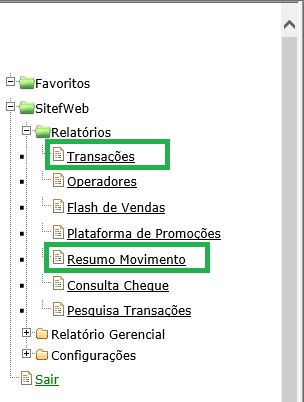
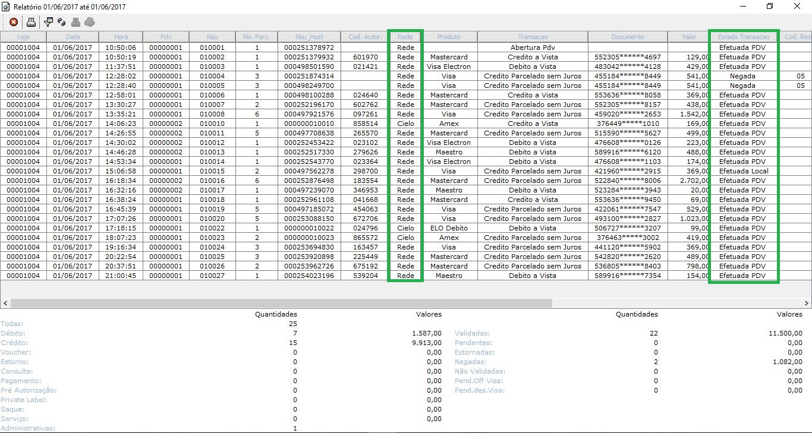
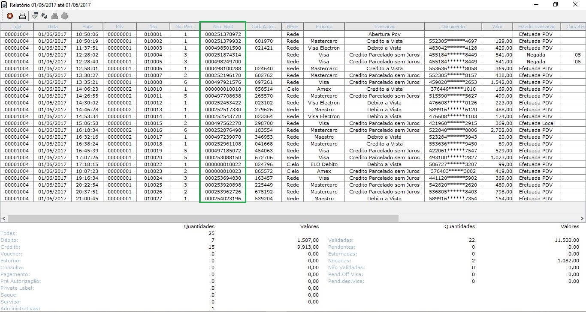

Sitefweb
Acessando o Sitefweb
Para acessar o Sitefweb, entre no endereço http://10.1.8.25/sitefweb
Em seguida preencha a tela com os dados de acesso que forma disponipilizados para cada loja.

Verificação de Vendas
Para verificar as vendas acesse a opção RELATÓRIOS, em seguida TRANSAÇÕES. Caso o acesso seja referenta a impressão do RESUMO DE MOVIMENTO siga para RESUMO MOVIMENTO.
Selecione o período desejado e a loja desejada (caso possua mais de uma loja ambas aparecerão na relação de lojas). na parte inferior da tela está o botão para LISTAR a consulta realizada.
Caso seja necessário cancelar a ação utilize o botão VOLTAR AO MENU no canto inferior esquerdo.
Após a consulta na tela de TRANSAÇÕES o relatório deverá se apresentar da seguinte forma:

Existe a possibilidade de ordenar as transações de forma que fique mais fácil a visualização clicando com o botão direito na coluna desejada.
Ordenado pela coluna NSU

Ordenado pela coluna TRANSAÇÕES

Nas colunas REDE e ESTADO TRANSAÇÃO é possível visualizar qual é o autorizador da transação em questão e o status da transação (se foi aprovada ou não).
A coluna NSU mostra o número referente a transação e a coluna NSU_HOST é utilizada para reimprimir o comprovantes

Na parte inferior da tela de relatórios são exibidos os totalizadores das transações, nessa parte é possível verificar a quantidades de transações e o valor que essas transações representam.
Analisando a tela de relatório RESUMO MOVIMENTO:
Atraves da tela de relatório é possível fazer a impressão das transações ou exportar as transações para uma planilha do Excel (.csv).

Manutenção de Pendências
Algumas vendas podem ficar com o status diferente de aprovada ou negada, são as vendas pendentes. Essas devem ser aprovadas. (aparecem em vermelho no relatório).

Para realizar a aprovação da transação PENDENTE deverá ser realizada a verificação do ticket e as informações de venda no LinxPOS antes de executar qualquer alteração no Sitefweb deve ser ralizado o passo a passo, para evitar a duplicidade de pagamentos e transtornos posteriores com os clientes.
Para acessar as opções de cancelamento ou aprovação da venda clique duas vezes sobre a transação pendente.
Para confirmar a transação clique no botã CONFIRMATRN.

A transação será considerada como EFETUADA depois da confirmação nas mensagem que irão aparecer.

Obs.: Caso seja preciso cancelar alguma venda pendente, basta clicar no botão CANCELATRN e confirmar as mensagens seguintes.
Persistindo o problema entrar em contato com a LINX através do telefone: (11) 2103-1550.
A LINX solicitará através do telefone que seja enviado um e-mail com as informações da Transação Pendente, Sempre Copiar o T.I. (augusto.borges@mariafilo.com.br; joao.gabriel@mariafilo.com.br) e a Tesouraria (elisangela.santos@mariafilo.com.br; vanessa.farias@mariafilo.com.br ).